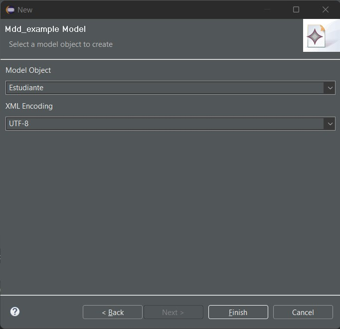

Modelamiento y Validación
Modelamiento y Validación#
Una vez generado nuestro proyecto de Ecore Modeling, podemos comenzar a modelar nuestro dominio. Para ello, se debe seguir los siguientes pasos:
Accedemos al Viewpoint Modeling para generar nuestro dominio
Para generar una entidad debemos seleccionar la opción Class del apartado Classifier y arrastrarla al diagrama de clases (Panel Palette).
Para cambiar el nombre de la entidad, debemos dar doble click sobre la entidad y escribir el nombre deseado en el apartado name.
Para agregar un atributo a la entidad, debemos seleccionar la entidad y seleccionar la quinta opción con lo que se agregara un atributo a la entidad.
Para definir un nombre al atributo debemos dar doble click sobre el atributo y escribir el nombre deseado en el apartado name.
Para definir un tipo de dato al atributo debemos dar doble click sobre el atributo y seleccionar la opción …* ubicada en EType
Se desplegará una ventana con los tipos de datos disponibles, seleccionamos el tipo de dato deseado ** ** y seleccionamos la opción OK.
Para agregar una relación entre entidades en el panel Palette seleccionamos la opción Relation al seleccionar la Relation debemos dar click en la entidad origen y luego en la entidad destino.
El proceso sigue con la generación de los diversos modelos
En el explorador del proyecto dar doble click en la opción nameModel.genmodel, luego dar click derecho sobre la opción nameModel e ir generando en orden secuencial cada una de las opciones que inician con la palabra Generate.
Generate Model Code
Generate Edit Code
Generate Editor Code
Se nos generaran diversos proyectos con terminanciones .edit y .editor
Para validar debemos dar click derecho sobre el proyecto nameModel.editor y seleccionar la opción Run As > Eclipse Application. Donde se nos desplegará una nueva ventana de Eclipse con el editor de nuestro modelo.
Creamos un nuevo proyecto general accediendo a la opción File > New > Project y seleccionamos la opción General > Project. Luego definimos un nombre en la ventana seleccionamos la opción Finish.
Dentro del proyecto creado, creamos un nuevo archivo de tipo EMF Model accediendo a la opción File > New > Other y seleccionamos la opción EMF Model Creation Wizard. Luego definimos un nombre en la ventana seleccionamos la opción Next.
Damos click en Next
Elegimos el modelo que deseamos crear y damos click en Finish. Se nos creara en el proyecto la entidad seleccionada

Para generar la relación damos click derecho sobre la entidad y seleccionamos la opción New Child > entity. Validadndo que esta se agrega en nuestro tree
Definimos los datos para cada atributo en el panel inferior en el campo value